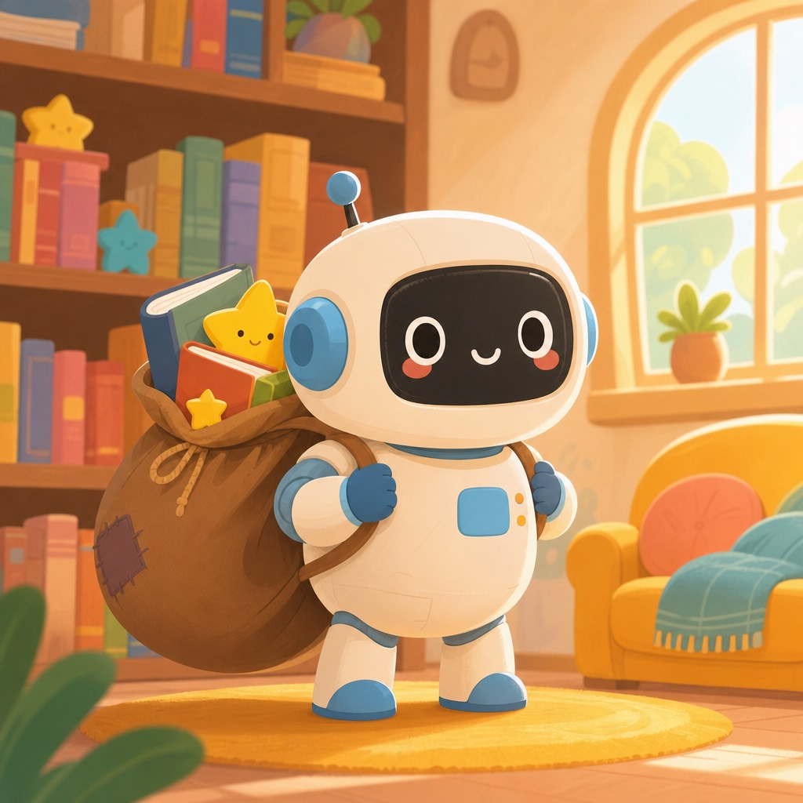

看更多
看更多长按识别可访问「儿童 AI-探索报」
查看更多适合小朋友的 AI 热点
 🎧 听我读
🎧 听我读长按识别，让手机把今天的内容
读给小朋友听
AI 的记忆口袋变大了

一位叫 Tibo 的人宣布：GPT-6.1 Sol 在 Codex 和 Work 这两个工具里，默认的「上下文长度」从 272k 提升到了 500k，大约增加了 80%。上下文长度可以理解成 AI 的「记忆口袋」——口袋越大，它一次能装下的对话、资料和细节就越多。当口袋快装满时，AI 会做一种叫「压缩」的动作，把前面的内容挤一挤、删一删，就像你把书包里的东西压扁才能塞进更多书。口袋变大之后，这种压缩就会少发生，那些需要长期记住大量细节的任务，就能做得更稳。
不过用户还是可以自己调整这个设置，想改小改大都可以。而且这个模型的最大上下文长度其实是 1M，也就是一百万，比默认的 500k 还要大一倍。默认值只是它平时习惯用的「标准口袋」。
为什么大家关注这件事？因为记忆越长，AI 就越像能陪你做完一整个大项目的小伙伴，而不是聊几句就忘了开头。对写长故事、整理大堆资料这类任务，帮助尤其明显。
小机器人解开九道数学老谜题
有一类数学题，叫「Erdős 问题」，是一位叫 Erdős 的数学家留下的开放难题，全世界的人都可以来挑战。Science 上的一项新研究说，谷歌 DeepMind 的 AlphaProof Nexus 从 353 道这样的题里，独立解出了 9 道。其中 2 道已经悬置了 56 年，也就是比很多爷爷奶奶的年纪还大。
更特别的是，它的解答不是自己说了算，而是通过了同行评审——就是让其他数学家认真检查，确认答案是对的。这在机器解数学题的历史上，是很重要的一步。
为什么大家这么关注？因为数学证明讲究一步一步不能跳，机器能做出被专家认可的证明，说明它不只是「记住」了答案，而是真的在推理。
顺便说一个小知识：所谓「开放问题」，就是还没有人知道答案、谁都可以来试的题目。
一个叫漏斗的奇怪现象
有位研究 AI 的专家叫 Karpathy，他画出了一个有趣的"漏斗"。漏斗最上面很宽：全世界大约 60 亿人，差不多每 4 个人里有 3 个，几乎没碰过 AI 聊天工具。往下一层窄一些：大约 10 亿到 20 亿人偶尔用用免费版的聊天机器人。再往下更窄：大约 2000 万人会在数学和写代码时直接用上最厉害的模型。最底下只剩大约 5000 人，他们能摸到实验室内部还没公开的系统。
为什么会有这个漏斗？Karpathy 说有三个原因：问题的难度不一样、系统本身的能力像锯齿一样忽高忽低、还有不同人能拿到的权限不一样。所以同一批 AI，在不同人眼里差别特别大。
最底下那 2000 万人，能看到 AI 在几个星期里做完过去要几个月的项目。那 5000 人则在看几千个 AI 一起合作好几周，做大型软件、找系统里的毛病、做科学发现。另一位专家 Ethan Mollick 补充说：就算这 5000 人，很多也没把 AI 的本事用足。还有人 Oran Ge 说，很多人不用 AI，是因为 AI 对他们暂时没帮上忙。
微软造了一颗自己的小芯片
微软发布了一颗叫 Maia 300 的芯片，这是它自己设计的第三代 AI 芯片。微软说，这颗芯片每消耗一份电，能产出的「token」比常见 GPU 系统多 40%。token 是 AI 读写文字时用的最小单位，你可以把它想成「AI 的一口饭」——同样一口电，它能多吃几口饭。
这颗芯片用台积电 N2P 工艺制造，配了 288GB HBM4 内存和 18TB/s 带宽，FP4 算力 13.8 PFLOPS。这些数字听着吓人，其实是在说：它记东西的空间很大，搬东西的速度很快，算得也很快。一个机架能装 96 颗，最多可以拼成 12000 颗一起干活的超大集群。
微软还说，上一代 Maia 200 已经在美国、欧洲和澳大利亚用起来了，在 Teams 和 Copilot 里，每瓦 token 产出最高提升 1.7 倍。目前它扛着 Microsoft Copilot 等正式业务，GitHub Copilot 和 Microsoft Foundry 年底前也会跟上。这些性能数字都是微软自己说的。微软做 Maia，是想少依赖 Nvidia 的 GPU。
会变身的软件小桥
有一家叫 Decart 的公司，专门做一件很聪明的事：让 AI 软件能在不同牌子的芯片之间自由切换。据华尔街日报报道，亚马逊正在和它谈收购，价钱可能高达 70 亿美元。
Decart 之前已经拿到超过 4 亿美元的投资，在 5 月那轮融资时，它的身价接近 40 亿美元。也就是说，短短几个月，大家觉得它更值钱了。
为什么这么抢手？因为 AI 软件平时要跑在芯片上，就像游戏要跑在游戏机上。可不同牌子的芯片“说话方式”不一样，软件换一台机器就可能跑不动。Decart 做的软件像一座翻译桥，让同一套 AI 在不同芯片上都能顺利工作。这样公司就不用被某一种芯片绑住，选择更多、也更灵活。
报道还说，之前 Nvidia 和 Anthropic 都曾和 Decart 谈过收购，但都没谈成。